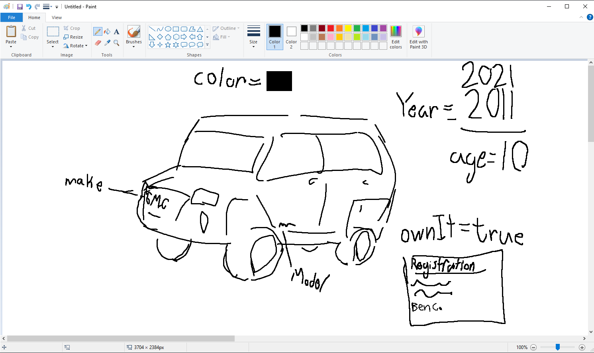

Challenges.
It took me a second to realize that we only had to use the console in browser, and that there wasn't a seperate console we had to use. Besides from that, the only struggle I faced was remembering to use the semicolons, but after I remembered I didn't forget again.
Problems.
The only problem I had was when I was creating the age variable, becuase I thought I was doing it incorrectly because it would show an undefined, but I didn't notice that the result was actually just above the undefined.
Results.
Here are the results/execution for the program.
A visual depiction of the Javascript vars for my car.